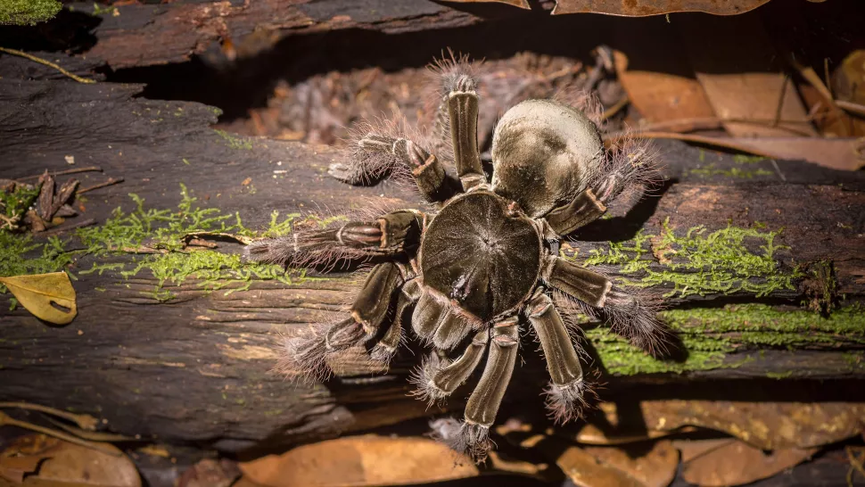

What is the largest arachnid to ever live?
by Cameron Duke

The term "arachnids" likely conjures up visions of spiders: from creepy, crawly things silently spinning webs in the corner of the room to big, hairy creatures with fangs — the likes of the mythical Shelob or Aragog — stalking you in the dark. But just how big (and ferocious) can these arachnids get? Even better, what was the largest one to have ever lived?
Answering this question is deceptively simple. Arachnids are eight-legged arthropods, which means that this group not only contains spiders but also scorpions and ticks among other, much smaller and rarer groups. Of these, spiders are the most diverse group of arachnids (the 50,000th species was discovered recently, and that number is expected to grow). The problem is that exactly what counts as an arachnid is a bit of an open question. Arachnids are part of a larger group of arthropods called the chelicerates. The chelicerates are subdivided into smaller groups, with arachnids being one group and horseshoe crabs (in the order Xiphosura) and sea scorpions (Eurypterida) being separate but related to the arachnids.
According to Russell Bicknell, a paleontologist at the University of New England in Australia, this is the traditionally accepted phylogeny. "But a paper came out recently that suggested this is wrong, and suggested that horseshoe crabs and sea scorpions are actually nested within arachnids."Thomas Hegna, an assistant professor of paleontology at the State University of New York (SUNY) at Fredonia, who was not involved in the new study, told Live Science in an email that the new phylogeny, which is based on molecular analysis, implies some groups of land chelicerates (spiders and scorpions) came before marine ones (horseshoe crabs and sea scorpions). However, despite the fact that this claim is well supported by genetic evidence, it is inconsistent with the fossil record.
This might seem like paleontological pedantry, but it actually makes a huge difference when it comes to determining the largest-ever arachnid. According to the traditional view of the arachnid family tree (ignoring horseshoe crabs and sea scorpions), the largest living arachnid is likely to be a spider. There are two spiders that make great contenders for the title of "world's largest spider." The largest known spider by mass is the Goliath Birdeater(Theraphosa blondi), a 6-ounce (170 grams) spider whose body can reach up to 5 inches (12 centimeters) in length, a number that grows to 11 inches (28 cm) when its legs are included, according to the American Association for the Advancement of Science (AAAS).
If one is to judge the size of a spider instead by the diameter of its leg span, then the largest spider may very well be the Giant huntsman spider(Heteropoda maxima), which has a leg span of about 1 foot (30 cm) in diameter, making it about the size of a dinner plate. Despite its size, this spider wasn't discovered until 2001.
Related Articles:
Copyright © 2022 Animalia. Gerson O. Pantoja 2C
All rights Reserved